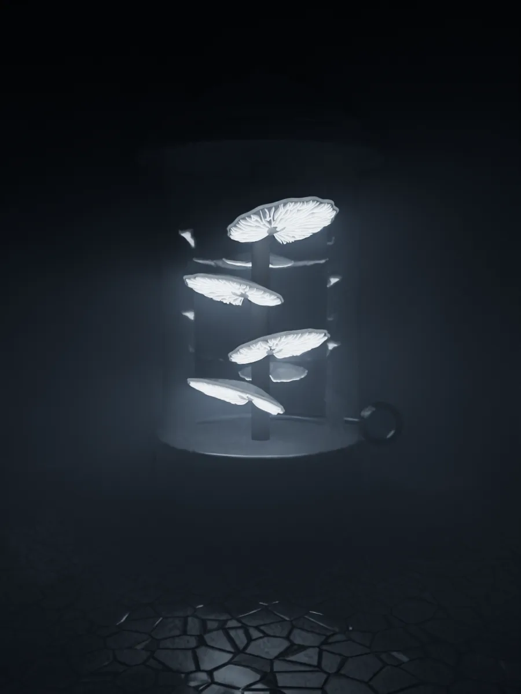

Plate A · Alternate Reality · Orthogonal
A world where the fungi came early
Changed driver: lignin-eating fungi before the Carboniferous. The evidence favours the other branch: Nelsen et al. 2016 reject this lag; Floudas et al. 2012 support it in part.
← labs
SheetA / 1
Rev3
Date2026-11-21
The branch this world took Earth's branch: history Fog: invented, or not yet happened
